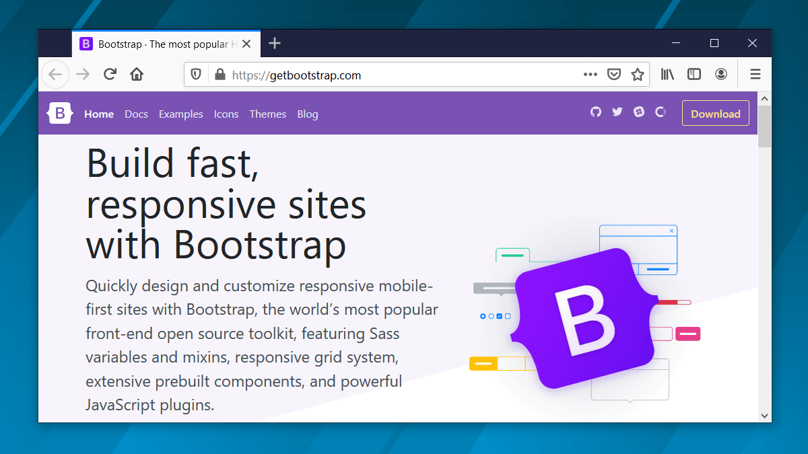

Что такое Bootstrap и зачем он нужен?

Содержание
- Что такое bootstrap?
- Что включает в себя bootstrap?
- С чего начать изучение bootstrap
- Преимущества и недостатки Bootstrap
- Какую версию выбрать?
Что такое Bootstrap?
Bootstrap — это открытый и бесплатный HTML, CSS и JS фреймворк, который веб-разработчики используют для быстрой вёрстки адаптивных дизайнов сайтов и веб-приложений.
Фреймворк Bootstrap используют не только независимые разработчики, но иногда и целые компании. На Bootstrap создано очень много различных сайтов, посмотреть их можно на странице Bootstrap expo.
Основная область его применения – это фронтенд разработка сайтов и интерфейсов админок. Среди подобных систем (Foundation, UIkit, Semantic UI, InK и др.) Bootstrap является самым популярным.
Почему Bootstrap так популярен? Это связано с тем, что он позволяет верстать сайты в несколько раз быстрее, чем на «чистом» CSS и JavaScript. А в нашем мире, время – это очень ценный ресурс. Ещё один его аспект – доступность. Она сводится к тому, что предоставляет возможность даже начинающему веб-разработчику (без глубоких знаний и достаточной практики) создавать достаточно качественные макеты.
Фреймворк Bootstrap – это набор набор CSS и JavaScript файлов. Чтобы его использовать эти файлы необходимо просто подключить к странице. После этого вам станут доступны инструменты данного фреймворка: колоночная система (сетка Bootstrap), классы и компоненты.
Как он работает? Например, чтобы создать кнопку на странице с помощью Bootstrap, достаточно к ссылке или элементу button добавить всего несколько классов.
Создание кнопки в Bootstrap 5:
<!-- Чтобы сделать ссылку в виде кнопки добавим к ней 2 класса: btn и btn-success -->
<a href="#" class="btn btn-success">Ссылка, оформленная в виде кнопки</a>
Ну как? Сколько на это потребовалось времени? Да, всего несколько секунд.
А если, например, нужно создать вкладки. Для этого необходимо всего лишь скопировать готовый HTML фрагмент, и отредактировать его так, чтобы в нём остался код для определённого количества вкладок:
<!-- Bootstrap 5 -->
<nav>
<div class="nav nav-tabs" id="tab" role="tablist">
<!-- атрибут data-bs-target должен указывать на элемент, который необходимо показать -->
<button class="nav-link active" id="tab-section-1" data-bs-toggle="tab" data-bs-target="#section-1" type="button" role="tab" aria-controls="nav-section-1" aria-selected="true">Секция 1</button>
<button class="nav-link" id="tab-section-2" data-bs-toggle="tab" data-bs-target="#section-2" type="button" role="tab" aria-controls="nav-section-2" aria-selected="false">Секция 2</button>
<button class="nav-link" id="tab-section-3" data-bs-toggle="tab" data-bs-target="#section-3" type="button" role="tab" aria-controls="nav-section-3" aria-selected="false">Секция 3</button>
</div>
</nav>
<div class="tab-content p-3" id="nav-tabContent">
<!-- атрибут id определяет вкладку -->
<div class="tab-pane fade show active" id="section-1" role="tabpanel" aria-labelledby="nav-section-1-tab">
...
</div>
<div class="tab-pane" id="section-2" role="tabpanel" aria-labelledby="nav-section-2-tab">
...
</div>
<div class="tab-pane fade" id="section-3" role="tabpanel" aria-labelledby="nav-section-3-tab">
...
</div>
</div>
Всё, вкладки готовы. На это тоже ушли считанные секунды. Правда, потрясающая скорость. В этом сила Bootstrap.
Но, Bootstrap – это не просто набор готовых инструментов (HTML фрагментов, классов, компонентов и плагинов), а хорошо спроектированный фронтенд фреймворк, который довольно просто можно настроить под себя посредством редактирования Sass переменных и использования миксинов.
Что включает в себя Bootstrap?
Bootstrap состоит из:
-
инструментов для создания макета (обёрточных контейнеров, мощной системы сеток, гибких медиа-объектов, адаптивных утилитных классов);
-
классов для стилизации базового контента: текста, изображений, кода, таблиц и figure;
-
готовых компонентов: кнопок, форм, горизонтальных и вертикальных навигационных панелей, слайдеров, выпадающих списков, аккордеонов, модальных окон, всплывающих подсказок и др.;
-
утилитных классов для решения традиционных задач наиболее часто возникающими перед веб-разработчиками: выравнивание текста, отображение и скрытие элементов, задания цвета, фона, margin и padding отступов, и т.д.
С чего начать изучение Bootstrap?
Первое, что нам необходимо — это скачать фреймворк и подключить его к странице. Как это выполнить детально описано в документации Bootstrap здесь. Там все подробно и понятно написано.
После того как мы это сделаем обычно возникает следующий вопрос: «А что дальше? Как использовать Bootstrap?». На самом деле тут нет ничего сложного, создавать страницы с использованием Bootstrap довольно просто.
Сначала необходимо изучить сетку и попрактиковаться на ней верстать макеты страниц и создавать разметку блоков. Изучить её можно тут. А также, там же, можно выбрать необходимую вам версию Bootstrap.
К сведению, сетка в «Bootstrap 3.x» построена на ,float, а в «4.x» и «5.x» – на flexbox.
После того как разберётесь с сеткой нужно изучить компоненты Bootstrap (как они верстаются и настраиваются) и научиться их вставлять в нужные места страницы.
Это минимальные задачи, которые перед собой необходимо поставить, чтобы научиться верстать сайты и веб-приложения на Bootstrap.
Ну если ваша задача не просто использовать Bootstrap, а что-то в нём изменять, переделывать, то без хороших знаний CSS тут конечно уже не обойтись. Некоторые вещи, конечно, можно настроить через изменения SCSS переменных и применения миксинов, а другие – нет. И это касается любых фреймворков.
Преимущества и недостатки Bootstrap.
Преимущества Bootstrap при его использовании для frontend разработки сайтов и интерфейсов админок:
-
высокая скорость создания качественной адаптивной вёрстки даже начинающими веб-разработчиками (достигается это благодаря использованию готовых классов и компонентов, созданных профессионалами);
-
кроссбраузерность и кроссплатформеннось (корректное отображение и работа сайта во всех поддерживаемых этим фреймворком браузерах и операционных системах);
-
наличие большого количества готовых хорошо продуманных компонентов, протестированных огромным сообществом веб-разработчиков на различных устройствах;
-
возможность настройки под свой проект, достигается это посредством изменения SCSS переменных и использования миксинов (можно изменить количество колонок, цвета, радиус скруглений, отступы между колонками и т.д.);
-
низкий порог вхождения; для работы с фреймворком не обязательно иметь «глубокие» знания по HTML, CSS, JavaScript и jQuery (достаточно знать только основы этих технологий);
-
однородность дизайна и его согласованность между различными компонентами (в Bootstrap все компоненты выполнены в едином стиле);
-
наличие огромного количества сообществ и обучающих материалов; при желании это поможет не только хорошо разобраться в фреймворке, но и найти ответы практически на любые возникающие у вас вопросы.
Фреймворк Bootstrap – это проект с открытым исходным кодом, доступным на Github. Он имеет лицензию MIT. Это означает, что его можно бесплатно использовать как в открытых, так и в коммерческих проектах.
Bootstrap, конечно, хороший инструмент, но на нём верстают далеко не всё. Его, например не имеет смысла использовать для:
-
создания фронтендов проектов с уникальным дизайном;
-
разработки проектов, в которых заказчик готов платить за проект на «чистом» CSS и JavaScript (в большинстве случаях такая разработка осуществляется в команде, в которой каждый её участник выполняет какой-то свой определенный набор функций);
-
вёрстки личных проектов, если у вас есть достаточно количество времени и ваш уровень знаний по HTML, CSS и JavaScript является достаточным, чтобы это осуществить.
Bootstrap, как и большинство подобных фреймворков, имеет недостатки. Среди них можно отметить следующие:
-
более большой размер конечных css и js-файлов проекта, чем они получились, если бы мы всё это создавали самостоятельно (это связано с тем, что стили фреймворка и его js-код содержат универсальный код (на все случаи жизни), а по факту для конкретного проекта из всего этого может потребоваться только часть);
-
сложность использования Bootstrap для вёрстки сайтов с уникальным дизайном, т.к. разработка в этом случае будет сопровождаться значительным переписыванием его кода и простой настройкой Bootstrap переменных тут уже не обойтись.
Первый недостаток можно немного «сгладить», если выполнить самостоятельную сборку проекта из исходных кодов и включить в неё только те компоненты, которые нам нужны. В этом случае код этого фреймворка будет значительно меньше.
Какую версию Bootstrap выбрать?
Для разработки большинства веб-проектов лучше использовать последнюю версию Bootstrap в выбранной ветке.
На текующий момент:
Bootstrap 5 рекомендуется для проектов, которые будут использоваться только в современных браузерах (поддержка IE и других браузеров не нужна). В других случаях - Bootstrap 4.
Что нового в Bootstrap 5:
-
нет зависимости от библиотеки jQuery, все плагины переписаны на чистом JavaScript;
-
библиотека Popper обновлена до v2.x с v1.x;
-
не поддерживаются Internet Explorer 10 и 11, Microsoft Edge <16, Firefox <60, Safari <10, iOS Safari <10, Chrome <60 и Android <6;
-
добавлен новый брекпойнт в сетку (xxl для 1400px и выше);
-
новые классы .g-*, .gx-* и .gy-* для указания горизонтальных и вертикальных отступов между ячейками;
-
добавлен новый компонент offcanvas;
-
удален компонент Media, его реализацию предлагают выполнять с помощью утилитных классов Bootstrap;
-
улучшен раздел по формам в документации, и добавлена возможность создания в input плавающего label.
Третью версию в основном имеет смысл использовать, если нужна поддержка «старых» браузеров (IE8 и IE9).
Основные отличия Bootstrap 4 от Bootstrap 3:
-
не поддерживает IE8, IE9 и iOS6 (v4 теперь только IE10+ и iOS7+);
-
сетка и другие компоненты построены на флексах, а не на float;
-
исходный код стилей написан на Sass, а не на Less;
-
размеры, указываются в rem и em, а не в px;
-
размер шрифта увеличен с 14px до 16px;
-
увеличено количество брекпойнтов в сетки (в v4 - 5, в v3 - 4);
-
удалены компоненты Panels, Thumbnails и Wells, вместо них добавлен Cards;
-
удалены иконочный шрифт Glyphicons и jQuery плагин Affix;
-
обновлены почти все компоненты;
-
работа всплывающих подсказок (Tooltips) и блоков с контентов (Popovers) построена на библиотеке Popper JS.
Компоненты Bootstrap 3 в IE8 и некоторых других версиях отображаются без градиентов, теней и закруглённых углов. Это связано с тем, что в них нет поддержки используемых для этих целей CSS3 свойств.
Это вся основная информация, которая необходима для того что понять для чего используется Bootstrap и решить для себя стоит ли его использовать именно вам в своих проектах. Всем добра!